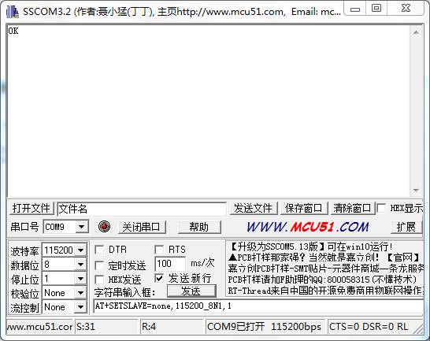
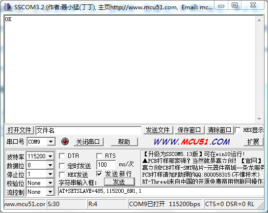

MODBUS 主从模式使用说明书¶
主从模式¶
智能数据采集仪 具备RS422（RS485）接口和RS232接口的主从模式切换功能。
主模式下，采集仪通过RS422接口或RS232接口连接外部传感器，可以利用脚本中的rs422_send、modbus_send、rs232_send函数对传感器数据进行读取。
从模式下，采集仪通过RS422接口或RS232接口连接PC。使用串口AT命令，可以选择使用RS422或者RS232接口中的一种方式。PC端上位机（比如Modbus Poll）可以通过Modbus RTU协议对采集上的数据（脚本最后一次执行保存的数据）进行读取。从模式下，对应选择接口的主模式函数（rs422_send、modbus_send、rs232_send函数）失效。
注解
目前仅支持 RS422接口 从模式功能。
模式切换和设置¶
主模式¶
利用串口或者上位机输入AT命令对基站式采集仪进行设置，以串口助手进行设置为例，首先打开串口助手，进行设备连接（正确选择串口号），波特率、数据位、奇偶校验位、停止位。并选择发送新行，打开串口。
在串口助手发送区输入
AT+SETSLAVE=none,115200_8N1,1命令进入主模式，然后点击【发送】按钮，在接收区返回OK表示设置成功。其中none代表主模式、115200代表波特率、8代表数据位、N代表奇偶校验位、1代表停止位，最后的1是代表地址。主模式下，波特率和地址无效。在串口助手发送区输入AT+GETSLAVE=? 命令可以得到当前设置状态，点击【发送】按钮进行发送。
从模式¶
利用串口或者上位机输入AT命令对基站式采集仪进行设置。以串口助手进行设置为例，首先打开串口助手，进行设备连接（正确选择串口号），波特率、数据位、奇偶校验位、停止位。在串口助手底部输入
AT+SETSLAVE=485,115200_8N1,1命令进入从模式，然后点击【发送】按钮，在接收区返回OK表示设置成功。其中485代表使用RS485的从模式、115200代表波特率、8代表数据位、N代表奇偶校验位、1代表停止位，最后的1是代表Modbus总线地址。此时重启设备，出现嘀的一声后，会连续嘀嘀响，说明设备已经进入从模式。
在串口助手发送区输入AT+GETSLAVE=? 命令可以得到当前设置状态，点击【发送】按钮发送。
数据说明¶
注解
数据格式依赖于脚本，请先掌握和熟悉脚本编写
内部存储格式¶
内部存储格式仅用于说明数据格式
数据内容格式
通道总个数 通道ID和数据 通道ID和数据 ... 通道ID和数据 1 Byte 不定长字节 不定长字节 ... 不定长字节
- 通道总个数：数据内容中包含的通道个数
- 同一包数据中，可能有相同的通道ID，依据出现的顺序进行区别
- 数据内容中包含个各要素的采集数据
通道定义格式
通道ID 通道数据类型 数据内容 主类型ID / MID 1Byte 子类型ID / CID 1Byte 1 Byte n Byte
- 通道ID：用于区别不同通道，包括主类型和子类型，具体请参见通道编号说明
- 通道数据类型：用以定义通道数据内容的格式，如下
01h Unsigned char 1 Byte 02h Signed char 1 Byte 03h Unsigned int 2 Byte 04h Signed int 2 Byte 05h Unsigned long 4 Byte 06h Signed long 4 Byte 07h Float 4 Byte 08h BCD HH 1 Byte 09h BCD MMHH 2 Byte 10h BCD YYMMDDHHmmss 6 Byte 11h String n Byte 每当脚本中调用函数
add_data_item，《数据内容格式》中通道总个数加1，并按顺序增加一组新的通道ID和数据以下为一帧数据：
Num MID CID TYPE DATA MID CID TYPE DATA MID CID TYPE DATA MID CID TYPE DATA MID CID TYPE DATA 05 00 01 01 0C 00 02 01 17 00 03 10 18 08 22 20 52 00 06 03 04 00 00 06 02 04 00 01
Modbus 读取保持寄存器¶
如果使用Modbus读取保持寄存器命令（03），那么在数据返回前，每条数据将按照4字节对齐展开。不足4字节的将扩展成4个字节，多于4个字节的数据类型将被忽略。
注解
此方法依赖于脚本中 add_data_item 的调用顺序。对于包含总线型接口的异步操作脚本，不推荐使用此方法。
上面的存储数据将被转换成:
item1 item2 item3 item4 寄存器地址 0 1 2 3 4 5 6 7 数据 0C 00 00 00 17 00 00 00 00 00 00 00 01 00 00 00 注意：存储格式中的MID：CID/00：03因为数据长度大于4被忽略，数据条目个数由5条变成4条。
然后，按照Modbus寄存器地址进行读取返回。比如，读取寄存器0将返回0C 00。要读取第1个数据条，需要读取寄存器0 连续2个寄存器的数据，然后对返回的4个字节进行数据变换，得到最终的数据值。
注意：返回的数据为低字节优先。
MODBUS示例：
发送
地址 操作码 寄存器 个数 CRC 01 03 00 00 00 02 C4 0B 接收
地址 操作码 个数 数据 CRC 01 03 04 0C 00 00 00 F9 63
Modbus读取输入寄存器¶
如果使用Modbus读取输入寄存器命令（04），那么将会按照寄存器地址代表的索引值来搜索Mid和Cid，如果匹配并且数据长度小于等于4，将返回该数据条目。数据值将被扩展成4字节。
比如，要读取Mid：Cid = 00：02的数据条目，那么首先要转换成寄存器地址，公式为： (Mid<<8)+Cid = 2。
MODBUS示例：
发送
地址 操作码 寄存器 个数 CRC 01 04 00 02 00 02 D0 0B 接收
地址 操作码 个数 数据 CRC 01 04 04 17 00 00 00 FE 30